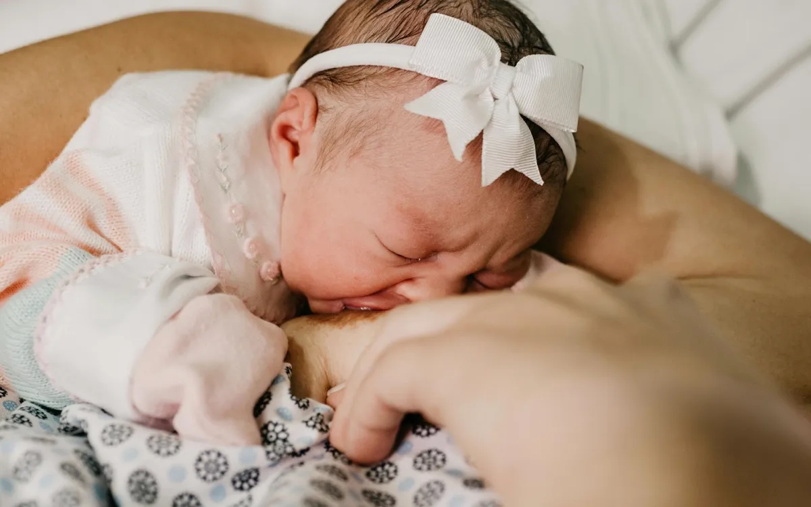
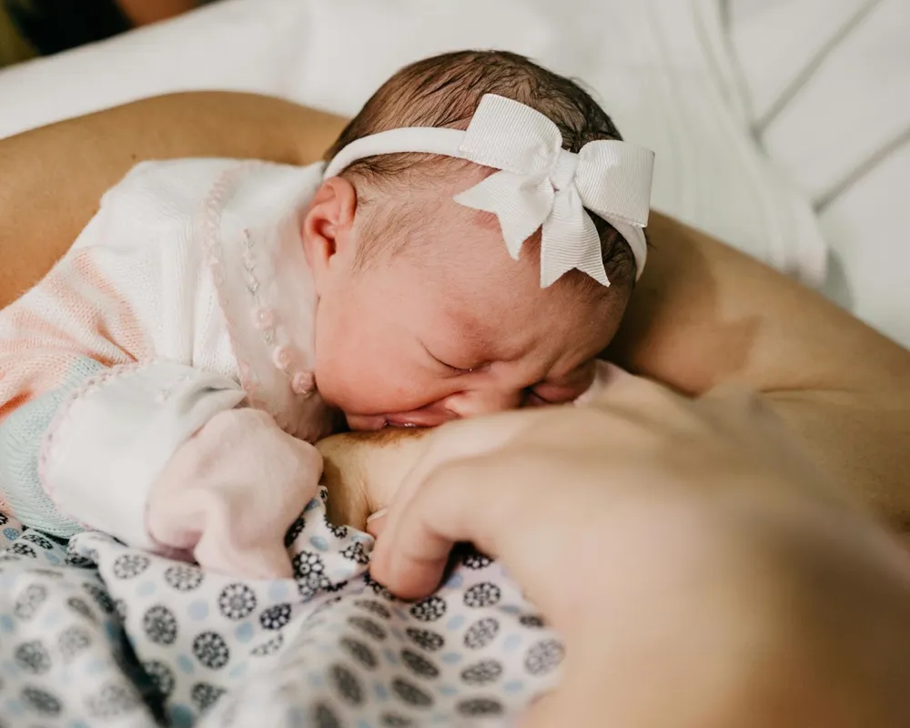

Calo no lábio do bebê realmente atrapalha a amamentação? Entenda o porquê
Um calo quase invisível na boca do recém-nascido denuncia a pega errada, e explica as mamadas que não terminam nunca, a dor e a impressão de que o leite "não sustenta".

É comum ouvir de mães recém-paridas a mesma queixa: o bebê passa horas no peito e, ainda assim, parece continuar com fome. Durante muito tempo, essa situação foi associada quase sempre à produção de leite da mãe. Mas consultoras de amamentação apontam que a explicação, na maioria dos casos, está em outro lugar: na forma como o bebê extrai o leite, não na quantidade disponível.
É o que constata a consultora de amamentação Dayane Dos Anjos, que já ajudou milhares de mães em mais de 20 países. Segundo ela, boa parte das dificuldades relatadas nas primeiras semanas tem uma origem comum, e pouco discutida fora do consultório.
O bebê que nunca larga o peito
Recém-nascidos sugam tudo que toca a boca: o seio, o dedo, a gola da roupa. É um reflexo para conseguir alimento, mas não se pode considerar que sucção e extração de leite sejam a mesma coisa, porque não são.
"O bebê pode passar horas no peito e ainda sair com fome, porque, apesar de sugar muito, não extraiu leite o suficiente." Dayane Dos Anjos, consultora de amamentação
Esse padrão costuma gerar mamadas que se estendem por muito mais tempo do que o esperado. Dayane observa que mamadas de até 40 minutos estão dentro da normalidade, mas sessões que ultrapassam esse tempo, ou bebês que nunca soltam o peito sozinhos, costumam ser um sinal de alerta.
Os sinais que especialistas recomendam observar
De acordo com consultoras da área, alguns comportamentos ajudam a identificar se o bebê está de fato se alimentando ou apenas sugando sem retirar leite de forma eficiente:
-

Calo nos lábiosÉ o sinal mais comum e o primeiro que costuma chamar a atenção das mães. Formado pelo atrito repetido durante a sucção, indica que o bebê está compensando com os lábios, fazendo um esforço excessivo e desnecessário para mamar.
-
Sonolência precoce
Bebês que adormecem antes de parecer satisfeitos, e acordam em seguida, podem estar gastando muita energia para um retorno de leite pequeno.
-
Desconforto para amamentar
Dor, fissuras e o bico com aparência achatada após a mamada (o chamado "bico em formato de batom") não deveriam fazer parte da rotina de amamentar, mesmo sendo comuns. "A dor costuma indicar que a pega está superficial, o que machuca a mãe e dificulta a extração para o bebê", afirma Dayane. Segundo ela, quando a pega é ajustada corretamente, a dor cessa de forma praticamente imediata, mesmo em casos de fissuras já existentes.
-
Sugar sem engolir
Muitos bebês sugam, mas não engolem leite. Há dois tipos de sucção: na sucção nutritiva, o bebê mama em ritmo mais lento, com movimentos visíveis de deglutição, geralmente sugando no máximo três vezes antes de engolir. Já na sucção não nutritiva, o ritmo é mais rápido e sem deglutição frequente, um padrão normal apenas no fim da mamada, quando o bebê já está satisfeito.
Especialistas recomendam observar dois pontos durante a mamada: o calo nos lábios, quando presente, e a papada do bebê. Quando ele está de fato engolindo leite, o movimento da papada é grande e visível, sinal de que a sucção nutritiva está acontecendo.
Diante da recorrência desses relatos, Dayane Dos Anjos reuniu em um material prático o passo a passo que costuma orientar em consultoria individual, hoje disponível também em formato de curso online.
Conhecer o método →Para especialistas da área, o principal risco de dificuldades de pega não corrigidas é o desmame precoce: quando a mãe, sem entender o que está acontecendo, acaba por interromper a amamentação antes do que gostaria. "A dificuldade inicial tem solução na maioria dos casos. O problema é que muitas mães não sabem disso e desistem achando que fizeram algo errado", diz Dayane.